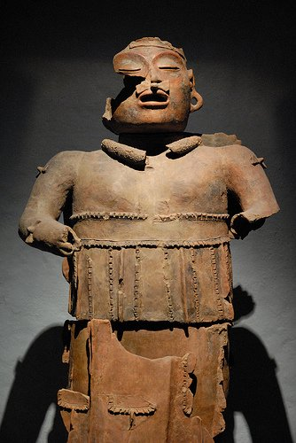
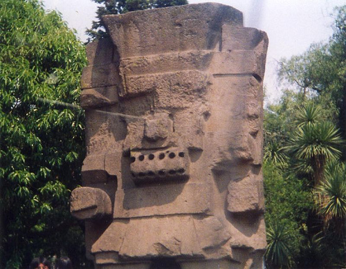
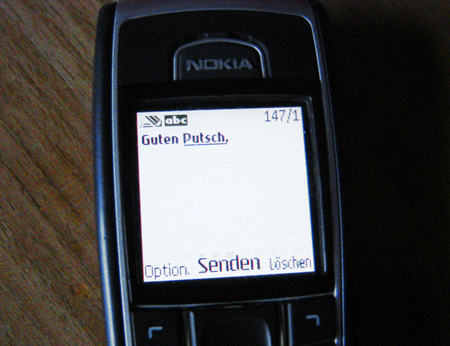

Chi era Enucatl?
Enucatl è il fratello di Quetzalcoatl, dal quale si distingue per la mancanza di piumaggio; è solitamente raffigurato nella forma di un serpente con ali di pipistrello, una tagliente coda biforcuta, una folta criniera sanguigna, un muso allungato di coccodrillo munito di micidiali zanne.

Il buon Satrapàme
noto, tra i numerosi sovrani aztechi, per aver posto fine al Sacri Misteri regolarmente celebrati in onore del dio Enucatl e alla furia inconoclasta che il suo predecessore, il tiranno Mauro, aveva scatenato nei confronti delle altre divinità.

Il sanguinario tiranno Mauro
il suo nome non è azteco: furono gli spagnoli a tradurre così, fraintendendo, l'aggettivo mah-urr (nero d'animo) con cui egli veniva descritto da una popolazione, a distanza di due secoli, ancora terrorizzata.
La vera storia di Enucatl
comincia nei primi di luglio del 2007, con la lettura de "il pendolo di Foucault" di Umberto Eco e la collaborazione del T9 Nokia. Quest'ultimo è infatti autore di alcune perle che sono alla base di questo racconto. Il nome stesso di Enucatl è la versione T9 per Foucault, ma anche Sobbabia (robaccia), Bradorose (ascensore) e altri ancora hanno tale nobile origine.


Precolombiani in lotta per il potere e per la vera religione
L'innegabile suono azteco del nome (come Quetzalcoatl, per capirci) diede inizio alla riscrittura di quasi mezzo secolo della storia di quel popolo. Tutto comincia nel 1300, con la nascita del Tiranno Mauro (ovviamente da "tirannosauro") il quale incontra da giovanissimo il culto di Enucatl e decide di imporlo con la forza una volta guadagnato il controllo dell'esercito. Enucatl è il fratello di Quetzalcoatl senza piume, ed è Tauroboliaste e Psicopompo (citazione ancora dal Pendolo) nella mitologia mesoamericana. Dopo anni di crudele regno il Tiranno Mauro verrà rovesciato dal cugino, il buon Satrapame, che riporterà la pace.
La diffusione su Wikipedia l'enciclopedia libera
La storia rimase pubblicata su tre articoli di Wikipedia per circa una settimana, dall'8 al 15 luglio 2007. Poi fu scoperta come falsa per i riferimenti bibliografici fasulli e le date sbagliate di pochi anni, in particolare quella della fondazione di Tenochtitlan. L'esilarante discussione sugli articoli è ancora disponibile nel bar di Wikipedia.